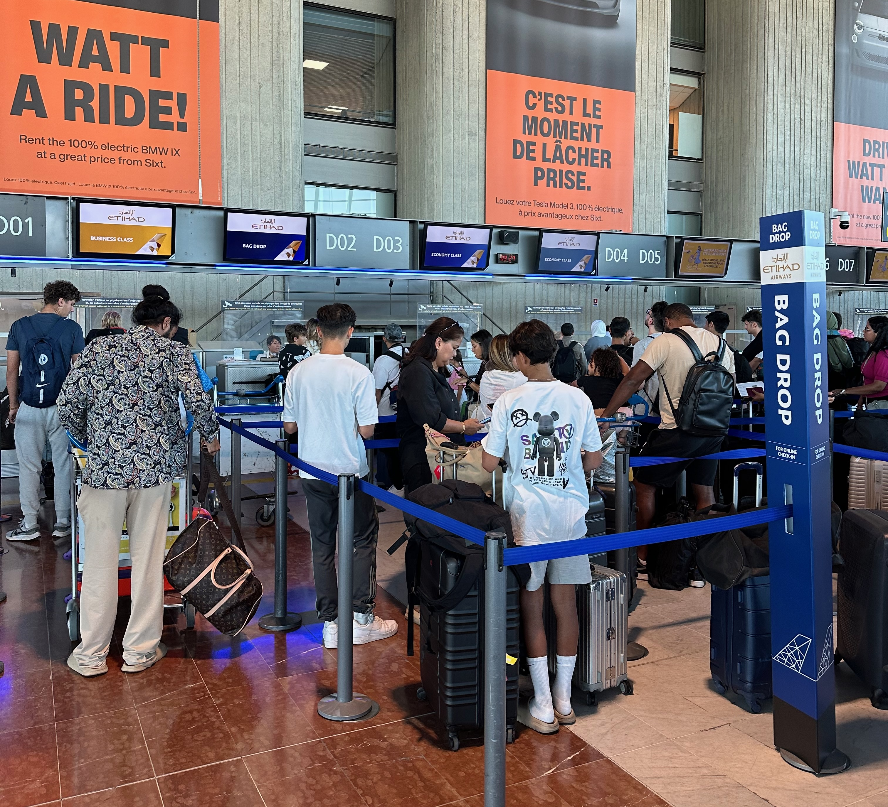

News / Notice
출발 Reset, 홈페이지를 오픈했습니다

여정을 마무리하고 공항에서 체크인할 때였다. 항공사 직원이 나에게 이렇게 물었다.
Where is your Final Destination?
바로 답하지 못했다. 나의 종착지는 어디일까?
다시 출발하는 새로운 비행기에 오르며,
또다른 시작을 위한 출발, ‘Reset’이라 명명하고 싶다.
지난 날의 이야기들을 모아 보고자 아카이브 사이트를 열었다.
과거, 현재, 미래의 이야기를 차례차례 담아보는 자리가 되었으면 한다.